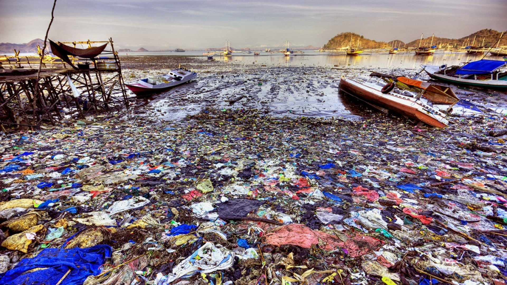
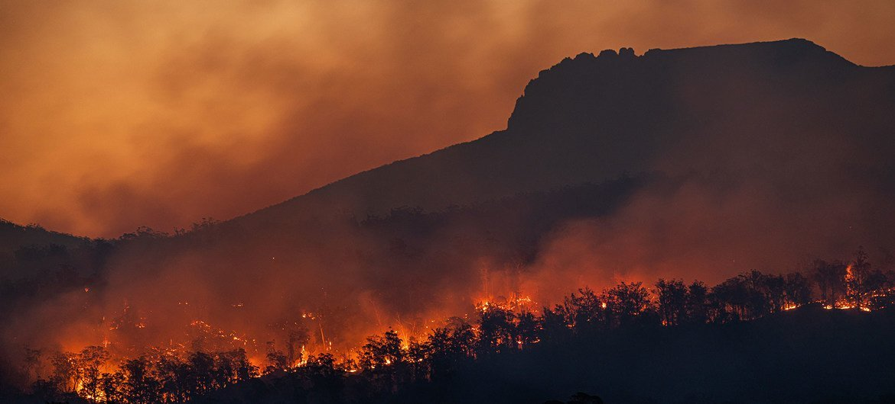
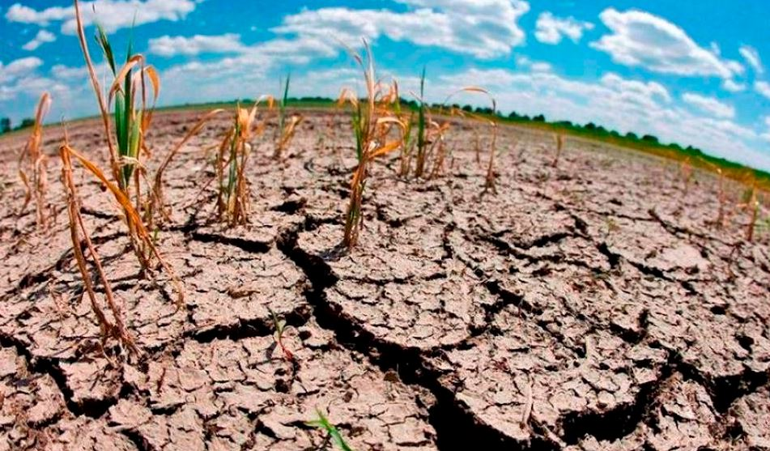

PHOTOS




The year 2050 is a very unfortunate year for the whole world, over the years in contact with the current one an unfortunate catastrophe will be unleashed in which in the oceans there is more garbage than fish, more pollution than terrestrial and aquatic animals. With the warming it will rise several degrees Celsius, in the Antarctic the ice will melt due to the summers being so long, the floods and the droughts will be some of the disasters on the part of the environment.
For this, it is important that you check that the taps are tightly closed and that there are no water leaks in your house or apartment. When cooking you can also save water, find out how to do it here.
Turn off the lights when you don't need them, also make the most of daylight and when you leave the house, always check that everything is turned off.
Just as sometimes you turn on lights that you are not using, you may be connecting devices unnecessarily. It is important that you disconnect all the equipment that you do not use, since these also consume energy.
Use the bags of the assigned colors and take into account the different cans that you find on the street so that you always throw the waste in the right place.
Since these are free of fertilizers and other polluting products. It is also beneficial that you support local sellers, since imported products are transported from other countries.
There are many types of reusable bags for market time, by choosing them you reduce your plastic consumption.